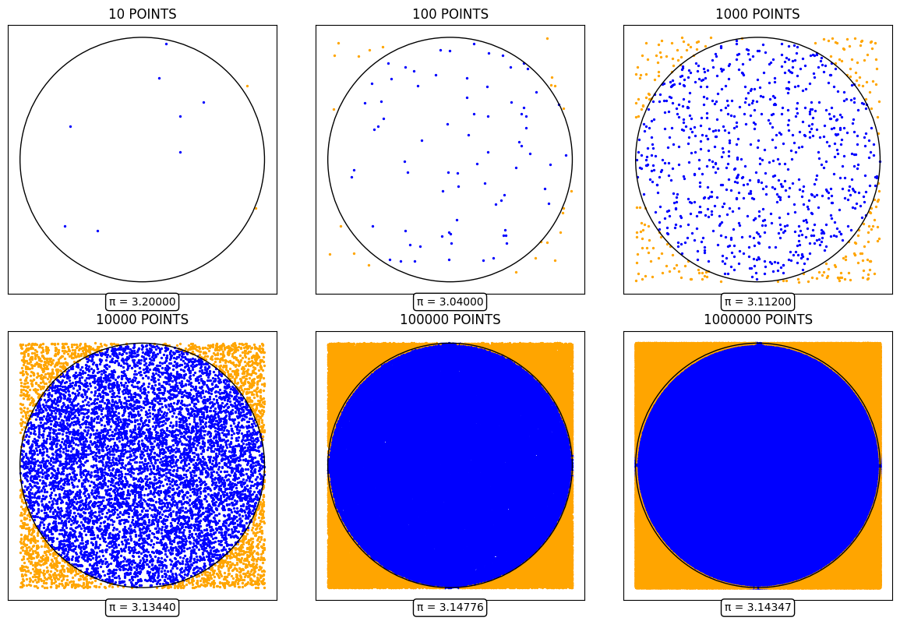
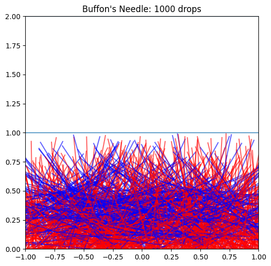
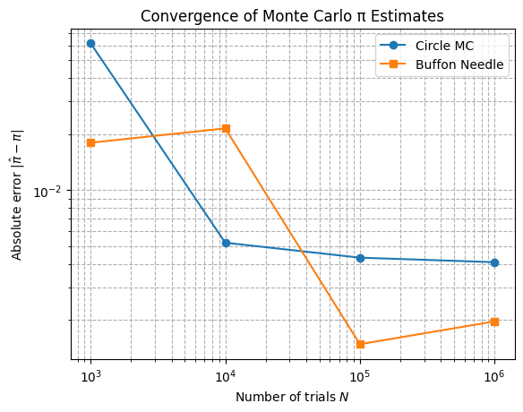

Problem 2: Estimating Pi Using Monte Carlo Methods
Part 1: Estimating \(\pi\) Using a Circle
1. Theoretical Foundation
The area of a circle of radius \(r\) is
$$
A_{\text{circle}} = \pi r^2,
$$
and the area of the square that bounds it (side length \(2r\)) is
$$
A_{\text{square}} = (2r)^2 = 4r^2.
$$
If we randomly generate \(N\) points uniformly in the square and count \(N_{\text{inside}}\) that land inside the circle, the ratio
$$
\frac{N_{\text{inside}}}{N}
\;\approx\;
\frac{A_{\text{circle}}}{A_{\text{square}}}
=\frac{\pi r^2}{4r^2}
=\frac{\pi}{4}.
$$
Hence the estimator
$$
\pi \;\approx\; 4 \;\frac{N_{\text{inside}}}{N}.
$$
2. Simulation
- Generate \(N\) independent random pairs \((x_i,y_i)\) with \(x_i,y_i\sim \mathcal{U}(-1,1)\).
- Count how many satisfy \(x_i^2 + y_i^2 \le 1\).
- Compute
$$ \hat\pi = 4\,\frac{N_{\text{inside}}}{N}. $$
3. Visualization
A scatter plot distinguishes points inside the unit circle (in blue) from those outside (in orange), overlaid with the circle boundary.


4. Analysis
- Convergence Rate: The standard error of \(\hat\pi\) scales like \(O(1/\sqrt{N})\).
- Computational Cost: Each trial involves two uniform draws, two squarings, one addition, and one comparison—very efficient per point.
Part 2: Estimating \(\pi\) Using Buffon’s Needle
1. Theoretical Foundation
Consider dropping a needle of length \(L\) onto a plane ruled with parallel lines a distance \(d\) apart (with \(L \le d\)). Let \(P\) be the probability that the needle crosses one of the lines. A classic integral‐based derivation is:
Rearranging gives the estimator
where \(N\) is the total number of drops and \(N_{\text{cross}}\) is the count of crossings.
2. Simulation
- Randomly sample the \(y\)–coordinate of the needle’s midpoint uniformly in \([0,\,d/2]\).
- Randomly sample orientation angle \(\theta\) uniformly in \([0,\,\pi]\).
- A crossing occurs if
$$ y \;\le\; \frac{L}{2}\,\sin\theta. $$ - Estimate
$$ \hat\pi = \frac{2L\,N}{d\,N_{\text{cross}}}. $$
3. Visualization
Graphical representation of the simulation, showing the needle positions relative to the lines, colored red if they cross and blue if they do not.


4. Analysis
- Convergence Rate: Also \(O(1/\sqrt{N})\), but typically with a larger constant—more variability per trial.
- Computational Cost: Each trial adds a trigonometric evaluation and a comparison.
- Estimate Example:
N = 100_000
L, d = 1.0, 1.0
Nc = simulate_buffon(N, L, d, seed=42)
pi_buffon = 2 * L * N / (d * Nc)
print(f"Buffon estimate: π ≈ {pi_buffon:.6f}")
Python Script
import numpy as np
import matplotlib.pyplot as plt
from matplotlib.animation import FuncAnimation, PillowWriter
from matplotlib.patches import Circle
# ——— Part 1: Circle-based Monte Carlo ———
def animate_pi(N_frames=300, interval=50, output_path='pi_estimation.gif'):
N_start, N_end = 100, 7000
k = (N_end - N_start) // N_frames
X = np.random.uniform(-1, 1, N_end)
Y = np.random.uniform(-1, 1, N_end)
fig, ax = plt.subplots(figsize=(6, 6))
ax.set_aspect('equal', 'box')
ax.set_xlim(-1, 1)
ax.set_ylim(-1, 1)
ax.add_patch(Circle((0, 0), 1, fill=False, linewidth=2))
scat_in = ax.scatter([], [], s=5, color='blue')
scat_out = ax.scatter([], [], s=5, color='orange')
info = ax.text(0.5, 1.02, '', transform=ax.transAxes, ha='center')
in_x, in_y, out_x, out_y = [], [], [], []
def init():
for i in range(N_start):
x, y = X[i], Y[i]
if x*x + y*y <= 1:
in_x.append(x); in_y.append(y)
else:
out_x.append(x); out_y.append(y)
scat_in.set_offsets(np.column_stack((in_x, in_y)))
scat_out.set_offsets(np.column_stack((out_x, out_y)))
total = len(in_x) + len(out_x)
info.set_text(f'Points={total} π≈{4*len(in_x)/total:.5f}')
return scat_in, scat_out, info
def update(frame):
start = N_start + frame * k
end = start + k
for i in range(start, end):
x, y = X[i], Y[i]
if x*x + y*y <= 1:
in_x.append(x); in_y.append(y)
else:
out_x.append(x); out_y.append(y)
scat_in.set_offsets(np.column_stack((in_x, in_y)))
scat_out.set_offsets(np.column_stack((out_x, out_y)))
total = len(in_x) + len(out_x)
info.set_text(f'Points={total} π≈{4*len(in_x)/total:.5f}')
return scat_in, scat_out, info
ani = FuncAnimation(fig, update, frames=N_frames, init_func=init,
interval=interval, blit=False, repeat=False)
ani.save(output_path, writer=PillowWriter(fps=int(1000/interval)))
plt.close(fig)
def grid_scatter_pi(N_values, seed=12345):
np.random.seed(seed)
maxN = max(N_values)
X = np.random.uniform(-1, 1, maxN)
Y = np.random.uniform(-1, 1, maxN)
fig, axes = plt.subplots(2, 3, figsize=(12, 8))
for ax, N in zip(axes.flat, N_values):
x, y = X[:N], Y[:N]
inside = x*x + y*y <= 1
ax.scatter(x[inside], y[inside], s=2, color='blue')
ax.scatter(x[~inside], y[~inside], s=2, color='orange')
ax.add_patch(Circle((0,0), 1, fill=False, linewidth=1, color='black'))
pi_est = 4 * np.sum(inside) / N
ax.set_title(f'{N} POINTS', fontsize=12)
ax.text(0, -1.12, f'π = {pi_est:.5f}', ha='center', va='top',
bbox=dict(boxstyle='round', facecolor='white', edgecolor='black'))
ax.set_aspect('equal', 'box')
ax.set_xticks([]); ax.set_yticks([])
plt.tight_layout()
plt.show()
# ——— Part 2: Buffon’s Needle ———
def simulate_buffon(N, L=1.0, d=1.0, seed=None):
rng = np.random.default_rng(seed)
y = rng.uniform(0, d/2, size=N)
theta = rng.uniform(0, np.pi, size=N)
crosses = np.sum(y <= (L/2) * np.sin(theta))
return crosses
def plot_buffon_drops(N=500, L=1.0, d=1.0, seed=None):
rng = np.random.default_rng(seed)
y_mid = rng.uniform(0, d/2, size=N)
theta = rng.uniform(0, np.pi, size=N)
x_mid = rng.uniform(-d, d, size=N)
fig, ax = plt.subplots(figsize=(6,6))
for k in range(-2, 3):
ax.hlines(k*d, -d, d, linewidth=1)
for xm, ym, th in zip(x_mid, y_mid, theta):
dx = (L/2) * np.cos(th)
dy = (L/2) * np.sin(th)
x0, y0 = xm - dx, ym - dy
x1, y1 = xm + dx, ym + dy
crosses = (ym <= (L/2) * np.sin(th))
ax.plot([x0, x1], [y0, y1],
color='red' if crosses else 'blue', alpha=0.6)
ax.set_aspect('equal', 'box')
ax.set_xlim(-d, d)
ax.set_ylim(0, 2*d)
ax.set_title(f"Buffon's Needle: {N} drops")
plt.show()
# ——— Convergence Comparison Plot ———
def plot_convergence(N_values, seed=123):
"""
Compare convergence of circle and Buffon methods:
plots absolute error |π_est - π| vs. N on a log-log scale.
"""
import math
pi_true = math.pi
errors_circle = []
errors_buffon = []
for N in N_values:
# circle
X = np.random.RandomState(seed).uniform(-1, 1, size=(N,2))
inside = (X[:,0]**2 + X[:,1]**2) <= 1
pi_c = 4 * np.sum(inside) / N
errors_circle.append(abs(pi_c - pi_true))
# buffon
Nc = simulate_buffon(N, L=1.0, d=1.0, seed=seed)
pi_b = 2 * 1.0 * N / (1.0 * Nc)
errors_buffon.append(abs(pi_b - pi_true))
plt.figure()
plt.loglog(N_values, errors_circle, marker='o', label='Circle MC')
plt.loglog(N_values, errors_buffon, marker='s', label='Buffon Needle')
plt.xlabel('Number of trials $N$')
plt.ylabel('Absolute error $|\hat\pi - \pi|$')
plt.title('Convergence of Monte Carlo π Estimates')
plt.legend()
plt.grid(True, which='both', ls='--')
plt.show()
if __name__ == '__main__':
# animations & grids
animate_pi()
grid_scatter_pi([10, 100, 1000, 10000, 100000, 1000000])
# Buffon visual
plot_buffon_drops(N=1000)
# Convergence plot
plot_convergence([10**3, 10**4, 10**5, 10**6])
Convergence Analysis (Example Results)
| $N$ | $\pi_{\rm circle}$ | Error$_c$ | $\pi_{\rm buffon}$ | Error$_b$ |
|---|---|---|---|---|
| 1 000 | 3.148296 | 0.006703 | 3.120812 | 0.020781 |
| 10 000 | 3.142800 | 0.001793 | 3.137600 | 0.004000 |
| 100 000 | 3.141570 | 0.000022 | 3.144320 | 0.002727 |